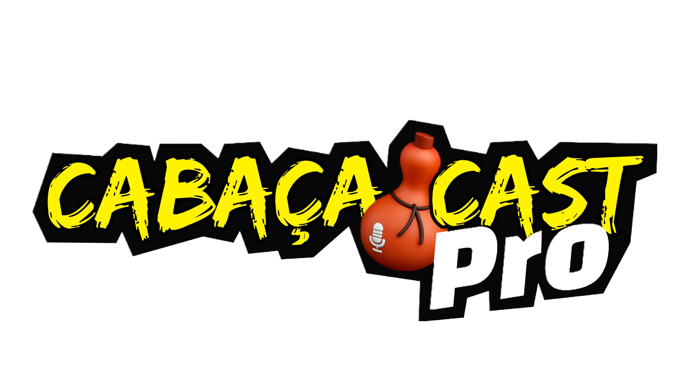

Porque todo mundo tem uma linda história e pode contá-la.

Assistam a Live com PAX Primavera
Introdução
PAX Primavera
Com início em 1984, a Pax Primavera ganhou espaço e visibilidade graças ao seu comprometimento em prestar às famílias atendidas um trabalho de qualidade e conforto na área de assistência familiar e funerária. O tempo foi passando, a empresa foi se expandindo e hoje estamos presentes em três estados, sendo eles Goiás, Paraná e Mato Grosso do Sul.
Totalizando mais de 100 unidades por todo País. Além dos nossos serviços de assistência, contamos também com serviços exclusivos na área da saúde, proporcionando aos nossos associados, tranquilidade, segurança, conforto e bem-estar.
Ainda com o interesse de melhorar o bem-estar dos nossos associados, a Pax Primavera, através de diversas parcerias oferece benefícios na área de saúde, tanto em consultas médicas como odontológicas, e também em exames laboratoriais, com
profissionais renomados e prontos a atender e realizar os cuidados necessários, criando uma rede de vantagens que busca valorizar o associado e demonstrar cada vez mais nosso cuidado com as famílias atendidas. Todos os nossos serviços contam com aparelhos tecnológicos de última geração, ambiente aconchegante, e todos os procedimentos, sejam da área de saúde ou área funerária, realizados e acompanhados por profissionais altamente capacitados e comprometidos a oferecer um atendimento de qualidade e excelência, em todos os momentos.
Além de benefícios acima citados, nossas parcerias também possibilitam descontos em farmácias, academias, área de beleza e muito mais, sempre pensando no melhor para que nossos associados se sintam verdadeiramente parte integrante de família Pax Primavera.